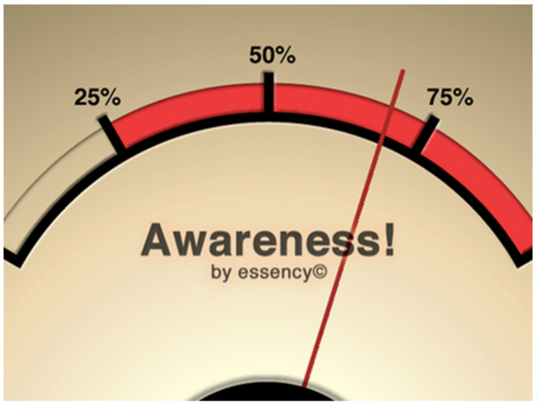
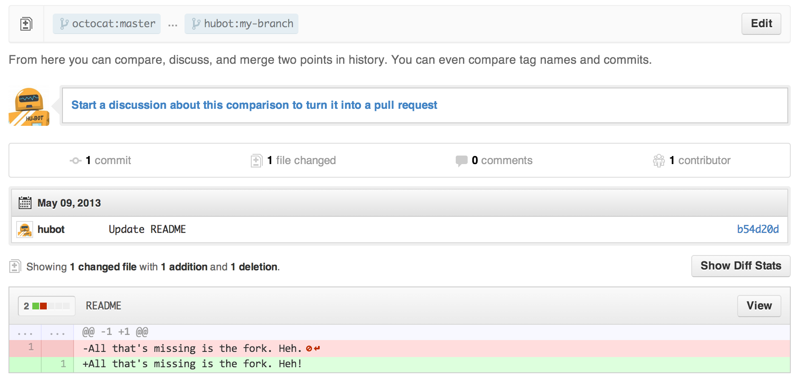
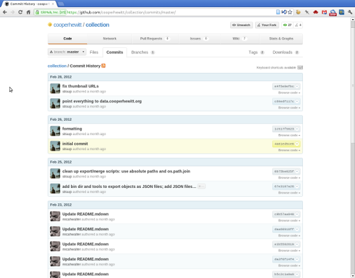

In this theory, Erickson and Kellogg (2000) argue how to design a system that enables communication and collaboration among groups of people via computer networks, and supports coherent behavior by making users and their activities visible to one another. This theory defines such systems as “Socially Translucent Systems” and points out they necessarily have three key characteristics: Visibility, Awareness and Accountability.
First key for designing a socially translucent system is Visibility: the system has to make socially significant information visible (including participants and their activities) so that they can see and react to one another more readily.
Second, quickly because of visibility of socially significant information, people engaged in a system can grasp what others are doing. Social norms drive how participants act under particular circumstances (e.g. trying not bother others’ activity).

Third, participants are held accountable for their actions because of the fact that others may be aware of their activities. The theory notes that awareness and accountability may not necessarily co-occur in a digital realm.
When analyzing an online collaboration workstation, the social translucency theory helps us to see how each visible cue generates what types of awareness and how the visibility contributes to facilitating the collaborative work on the system, in terms of social accountability that is caused from the awareness. A certain visible element makes a participant in the system aware that his/her corresponding activity may be seen by other participants (or others), and consequently he/she brings more proper social norms and practices into that collaborative work in terms of their social accountability.
As discussed in the social translucency theory, the three features are all required when designing an online communication and collaboration system. Therefore, the theory can also point out what element a system lacks to successfully support deep, coherent and productive communication.
The theory is helpful to figures out how an element in GitHub helps a collaborative work and consequently gives a boost the productivity.
Overall, GitHub is designed for a collaborative code building by multiple developers. It offers a lot of visible cues (e.g. history of actions, contributions, etc.) that illustrate a user’s activities, since a user can utilize those information when judging whether a developer is reliable or not. In terms of social translucency theory, the visibility is clearly making a user aware of other users’ activities and feel accountable for maintaining his/her work quality.

For instance, since the recency and volume of activity are open to the public, users of GitHub have to maintain those status in a certain level in order to obtain credibility. GitHub also shows a sequence of actions over time (i.e. History of Actions, Contribution, Forking, etc.), and therefore others can infer an intention behind an action and the developer’s competence. As for the point of view from a manager of a project, the number of followers and participants in a project are visible, and thus the manager has to maintain those numbers fabulously so that he/she can show that the project is active and important and consequently attracts more people, since the managers are aware that those numbers affect the project’s attraction.
For this scenario, social translucency helps figuring out visual elements that generate social awareness and accountabilities on users and therefore facilitate the collaborative work.
Since all programmers update their codes on the shared space, their accomplishments are visible to everyone in the group. As a result, each member in the team can watch over progress one another. Furthermore, all members are aware that their own progress can be referred by others. Driven by social norms, they feel accountable for keeping making progress.
Programmers update is visibly shown as history, or updated file associated with date/time.
All members can be aware of how other participants’ progress might be like, referring to their history function or files uploaded on their own repository.
All members know that their progress might be referred by other members, and therefore feel accountable for making more than socially acceptable amount of efforts to be done in a certain period.
